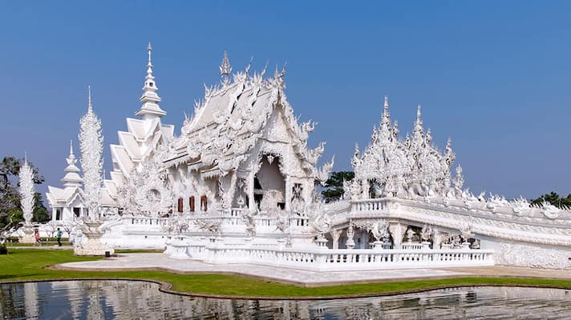
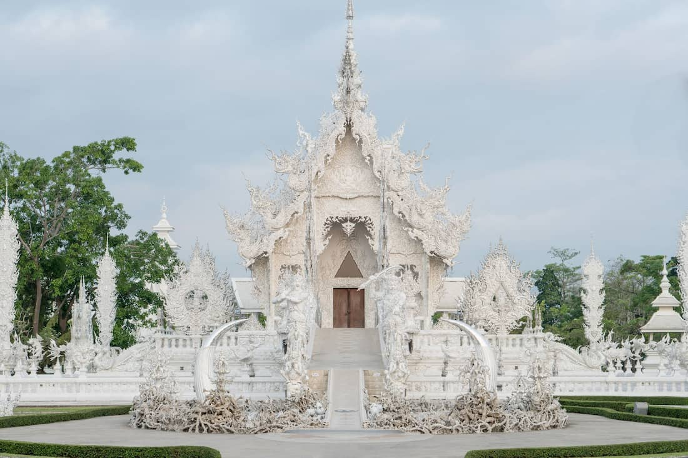
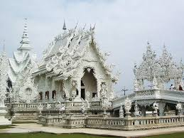
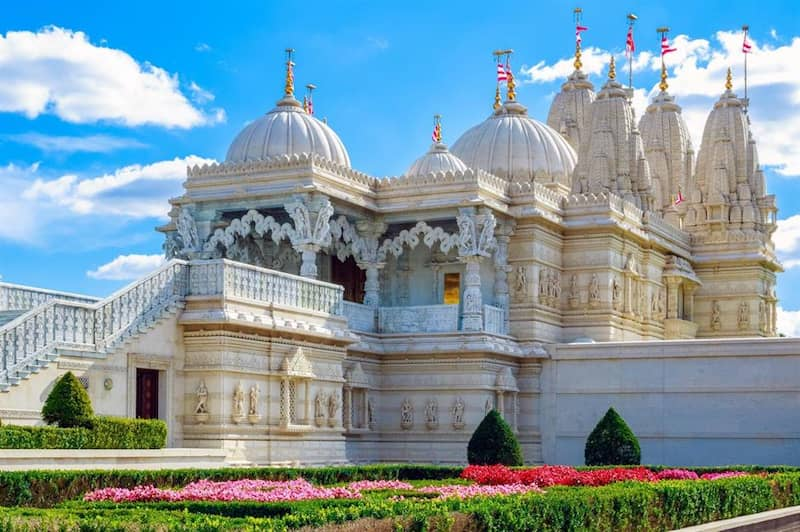
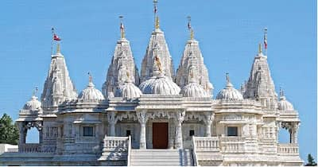
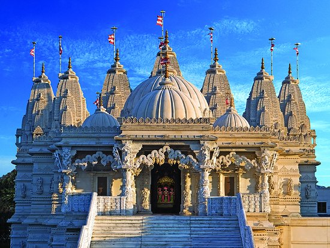
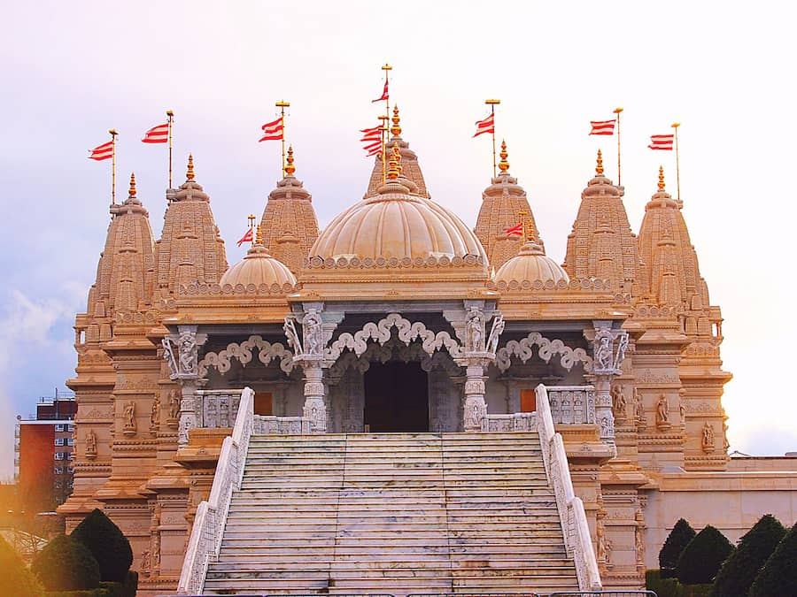
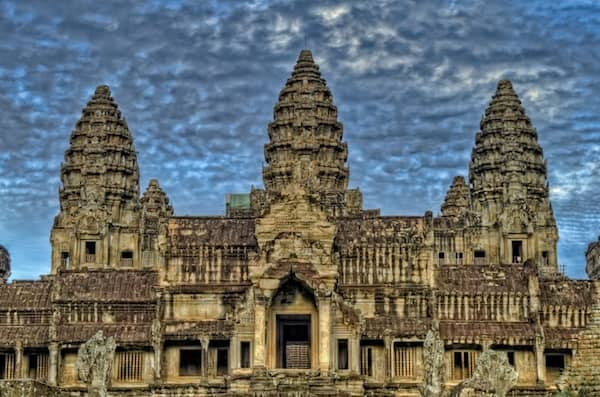
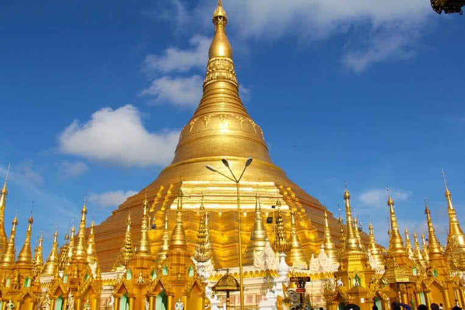

Home

Angkor Wat – Siem Reap, Cambodia

Meenakshi Temple – Madurai, India

Wat Rong Khun (White Temple) – Chiang Rai, Thailand

Shwedagon Pagoda – Yangon, Myanmar

Prambanan Temple – Yogyakarta, Indonesia

Temple of Heaven – Beijing, China

Kinkaku-ji (Golden Pavilion) – Kyoto, Japan

Sri Ranganathaswamy Temple – Srirangam, India

Borobudur Temple – Java, Indonesia